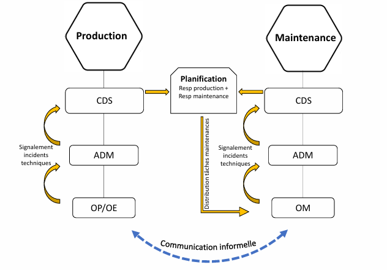
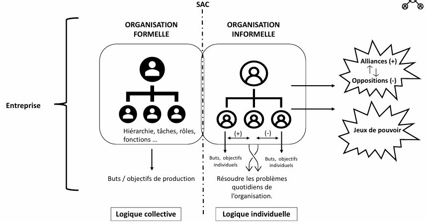
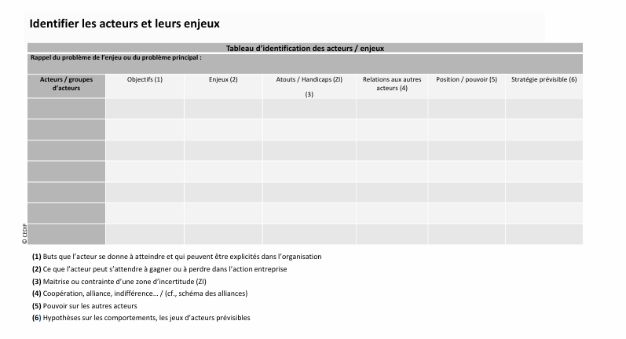
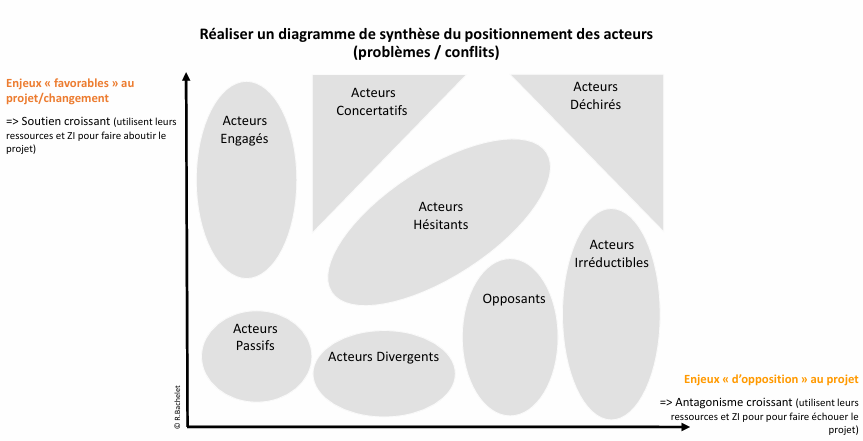

La Sociologie des Organisations
Qu'est-ce qu'une Organisation ?
Une organisation est un ensemble humain structuré, en mouvement permanent. Elle repose sur :
- Infrastructure : Activités productives.
- Socio-structure : Relations entre individus et groupes.
- Super-structure : Valeurs et culture partagées.
Organisation Formelle et Informelle
Une organisation ne se limite pas à sa structure officielle (organigramme). Elle fonctionne aussi grâce aux relations informelles et aux jeux de pouvoir entre les acteurs.

Les Types de Structures Organisationnelles
- Structure hiérarchique : Organisation pyramidale avec des niveaux de commandement clairs.
- Structure fonctionnelle : Division des tâches selon des spécialités.
- Structure matricielle : Combinaison des structures hiérarchiques et fonctionnelles.
Le Système d’Action Concret
Dans une entreprise, les relations de travail ne sont pas seulement définies par l'organigramme, mais aussi par des échanges informels essentiels au bon fonctionnement.

Théories Classiques des Organisations
Deux grands penseurs ont marqué la sociologie des organisations :
- Max Weber : Trois types d'autorité : traditionnelle, charismatique et légale-rationnelle.
- Frederick Taylor : Organisation Scientifique du Travail (OST), basée sur la spécialisation et l'efficacité.
L'Analyse Stratégique
Développée par Michel Crozier et Erhard Friedberg, elle repose sur trois postulats :
- Les acteurs ont leurs propres objectifs.
- Ils disposent d'une liberté relative.
- Leurs stratégies sont rationnelles mais limitées.
Identification des Acteurs et de leurs Enjeux
Les acteurs d’une organisation ont des objectifs différents et des relations de pouvoir complexes. Ce tableau permet d’analyser leurs interactions et leurs zones d’incertitude.

Les Zones d'Incertitude et le Positionnement des Acteurs
Certains acteurs ont un pouvoir stratégique en contrôlant des informations, des règles ou des compétences spécifiques. Ce schéma montre leur positionnement face aux enjeux de l’organisation.
